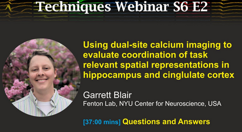
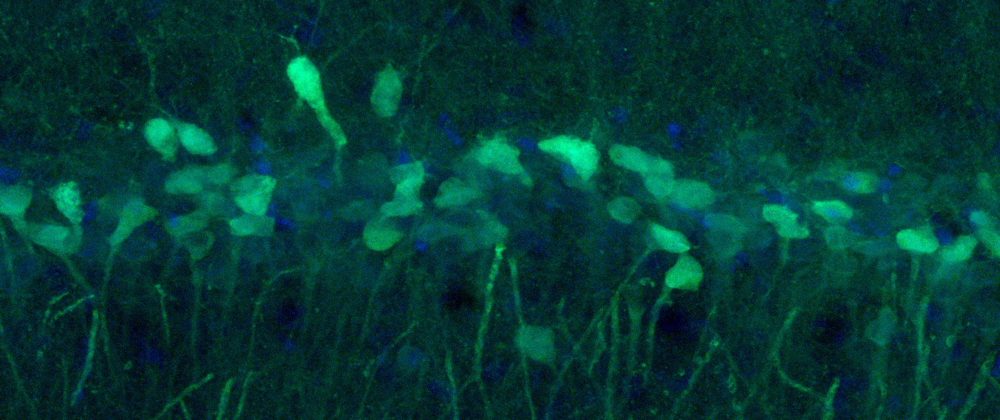
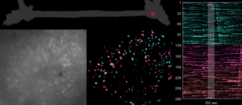
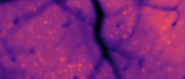
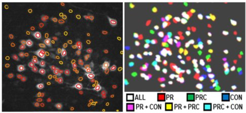

Cambridge NeuroTech Webinar
Featured webinar on my dual-site miniscope recording technique in rats and what this teaches us about spatial representations in hippocampus and cingulate cortex.

Post-doctoral researcher
Fenton Lab, New York University

I am a postdoctoral fellow at NYU’s Center for Neural Science working with Dr. André Fenton. I received a B.S. in Cognitive Science and a B.A. in Spanish Literature from UC Irvine in 2015. I then earned my PhD in Psychology from UCLA (2021) working with Dr. Tad Blair, where I pioneered calcium imaging applications in hippocampus (Blair et al. eLife 2023; Guo, Blair et al. Sci. Adv. 2023) and anterior cingulate cortex (Hart, Blair et al. JNeuro. 2020) of freely behaving rats to study learning, memory, and decision-making.
During postdoctoral research, I study how the hippocampus and cingulate cortex collectively represent task-relevant information by recording from both regions during spatial navigation tasks. Current research is supported by my NIH F32 NRSA fellowship. Outside the lab, I enjoy cooking with my wife, exploring New York on walks with our dog, video games, hip-hop, and sci-fi.

Featured webinar on my dual-site miniscope recording technique in rats and what this teaches us about spatial representations in hippocampus and cingulate cortex.

Blair et al. (2023) “Hippocampal place cell remapping occurs with memory storage of aversive experiences.”

Schuette et al. (2020) “Long-Term Characterization of Hippocampal Remapping during Contextual Fear Acquisition and Extinction.”

Guo, Blair et al. (2023) “Miniscope-LFOV: large-scale imaging of neural dynamics in freely behaving animals.”

Hart, Blair et al. (2020) “Chemogenetic Modulation and Single-Photon Calcium Imaging in ACC Reveal a Mechanism for Effort-Based Decisions.”
* denotes equal co-authorship
(2023) GJ Blair et al. "Hippocampal place cell remapping occurs with memory storage of aversive experiences" eLife. doi:10.7554/eLife.80661
(2023) C Guo*, GJ Blair*, et al. "Miniscope-LFOV: A large-field-of-view, single-cell-resolution, miniature microscope for wired and wire-free imaging of neural dynamics in freely behaving animals" Science Advances. doi:10.1126/sciadv.adg3918
(2023) Z Chen, GJ Blair, et al. "A hardware system for real-time decoding of in vivo calcium imaging data" eLife. doi:10.7554/eLife.78344
(2020) Z Chen, GJ Blair, HT Blair, and J Cong. "BLINK: Bit-Sparse LSTM Inference Kernel Enabling Efficient Calcium Trace Extraction for Neurofeedback Devices" Proceedings of the ACM/IEEE. doi:10.1145/3370748.3406552
(2020) PJ Schuette et al. "Long-Term Characterization of Hippocampal Remapping during Contextual Fear Acquisition and Extinction" Journal of Neuroscience. doi:10.1523/jneurosci.1022-20.2020
(2020) EE Hart*, GJ Blair*, et al. "Chemogenetic Modulation and Single-Photon Calcium Imaging in Anterior Cingulate Cortex Reveal a Mechanism for Effort-Based Decisions" Journal of Neuroscience. doi:10.1523/jneurosci.2548-19.2020
(2015) GJ Blair, et al. "Disc Size Supports Top-Down, Selective Attention in a Task Requiring Integration across Multiple Target" Journal of Vision. doi:10.1167/15.12.897
Society for Neuroscience | NYU Neuro | UCLA Psych in Action | Knowing Neurons | SfN BraiNY | BioBus